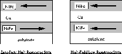
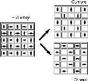
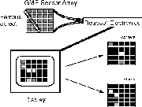
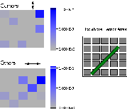
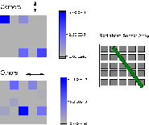
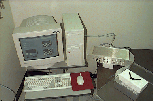

Figure 1: The Giant Magnetoresistance
effect is due to the large difference in electrical
resistance between two magnetic states of a metallic
multilayer film.

Figure 2: An illustration of the layout
of the 5x5 GMR sensor array. Each white square in the "full
array" drawing on the left represents one NVE NVS5B15 sensor.
The arrows on this drawing indicate the orientation of the
axis of sensitivity for each sensor. The right side of the
figure shows how the outputs of the elements are split up in
the images that follow.

Figure 3: Layout of the image
acquisition apparatus.

Figure 4: Image of a threaded #10 rod
placed above the GMR array. On the left, the gray-scale
images show the response of the elements to the magnetic
field emanating from the rod. The "corners" image shows only
data from the elements with a vertical axis of sensitivity,
while the "others" image shows data from the elements with a
horizontal axis of sensitivity.

Figure 5: Same as Figure 4, but with
the rod flipped about a vertical axis. The image is almost a
mirror reversal of Figure 4.

Figure 6: Same as Figure 4, but with a
6 Oe external applied field acting on the rod and the array.
The image looks similar to Figure 4 and is even a bit clearer
despite the necessary subtraction of the background signal
from the external field. This image suggests that GMR arrays
will be able to locate ferrous objects even in magnetic soils
of volcanic origin.

Figure 7: Image of two ferrous bolts
placed above the array. The outline of the bolts is not
directly visible, but the symmetry of the pattern is
recognizable. More GMR elements and concomitant higher
spatial resolution could substantially improve this image.

Special electronic version bonus figure
(!) Here is a digital camera photo of the
apparatus. The sensor array is in the Bud box below the white
firebrick, on which the two bolts (Figure 7) are placed. The
sensor array is connected via ribbon cable (for signals) and
coax (power) to the gold anodized box, which contains two
encapsulated DC power supplies and a breakout board. The gold
electronics box is connnected by a shielded cable to an A/D
card in the PC, whose monitor is displaying the sensor
readout.